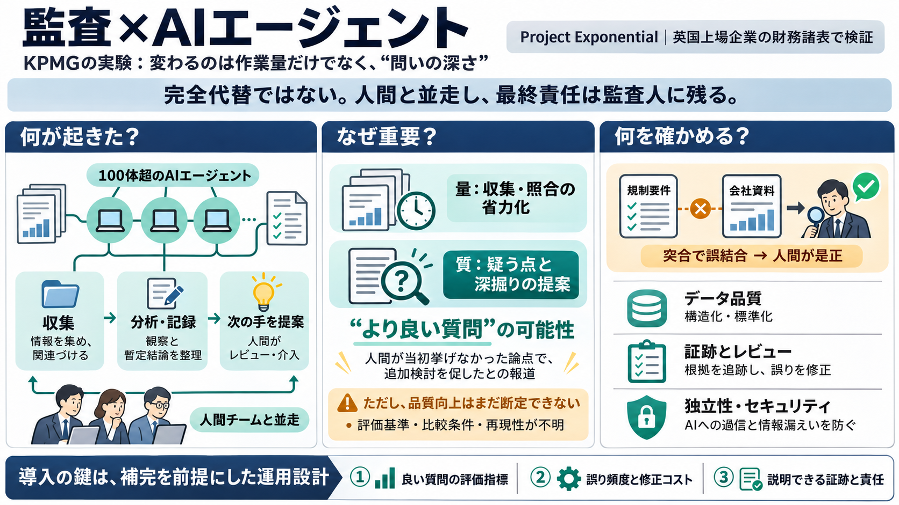

KPMG's "Project Exponential" put AI agents alongside a real audit team and found the bots dug deeper on individual questions
AI agents intensify this conflict, according to the FRC, because they dig deep into a company's data during an audit. Wh…

AI agents intensify this conflict, according to the FRC, because they dig deep into a company's data during an audit. Wh…
The AI assistant's direct access to KPMG's audit methodology allows auditors to design substantive testing procedures mo…
Automate routine tasks: AI agents can handle repetitive and time-consuming tasks, such as data analysis and document rev…
Automate routine tasks: AI agents can handle repetitive and time-consuming tasks, such as data analysis and document rev…
> We’re continuing to build out our AI capabilities with increasingly sophisticated agents in KPMG Clara to enable KPMG …